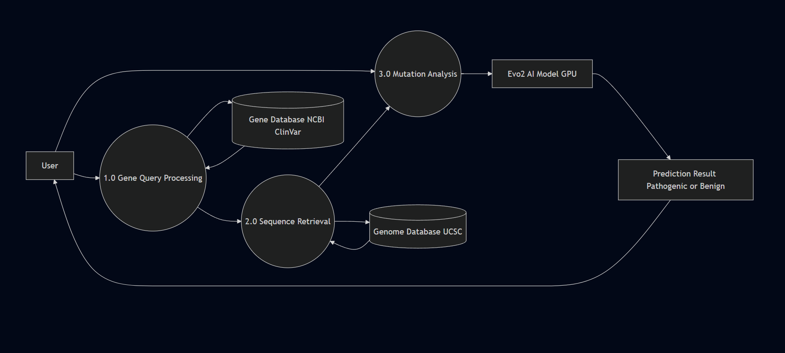
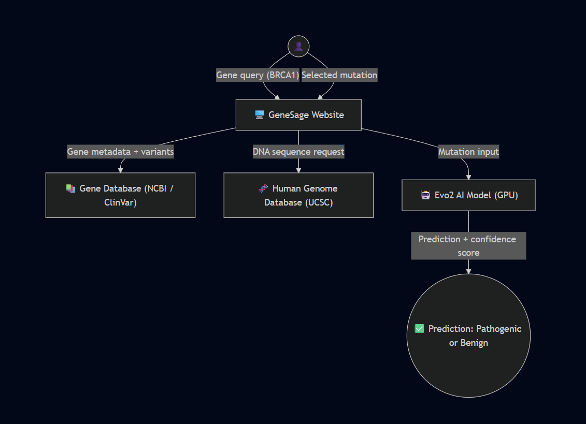

AI Can Help Solve Genetic Uncertainty
Evo2 can predict whether a mutation is dangerous — without needing specific training on medical records.
Predicting whether a DNA mutation is harmful or harmless
using the Evo2 AI model
When doctors run a genetic test, 10–40% of results come back as Variants of Uncertain Significance (VUS) — mutations where no one knows if they cause disease or not. This leaves patients stuck with no clear answer.
GeneSage uses an AI model called Evo2 — trained on 9.3 trillion DNA letters from 128,000+ species — to instantly predict whether a mutation is likely harmful or likely safe, with over 90% accuracy.
To build a simple web tool that lets anyone — doctors, researchers, or students — check whether a specific DNA mutation is dangerous, without needing any technical background or expensive equipment.
Get an instant AI prediction on any uncertain mutation — before ordering expensive lab tests.
Browse any gene, explore its DNA, and compare AI predictions against known clinical records.
Deploy the AI model on a powerful GPU so anyone can use it without owning hardware.
Search any human gene, pick a chromosome, and view the DNA sequence interactively.
Pull real gene data and known mutations from NCBI, ClinVar, and UCSC automatically.
Enter a position and a changed DNA letter — get a prediction with a confidence score.
See how the AI's answer compares to what medical databases already say about a mutation.
Calibrate the yes/no threshold using a real BRCA1 mutation dataset of 500 known variants.

Fetch the original DNA sequence around the mutation from an online genome database
Create a second copy of the sequence with the changed DNA letter in place
The AI scores how "natural" each sequence looks based on 9.3T training letters
If the mutated version scores much lower → likely harmful. Near same → likely safe.

Evo2 can predict whether a mutation is dangerous — without needing specific training on medical records.
Running on cloud GPUs means any hospital or lab can use this for free, from a browser.
Every AI prediction can be compared side-by-side with what doctors already know from ClinVar.
Faster answers on uncertain mutations means fewer delays, less anxiety, and better care.